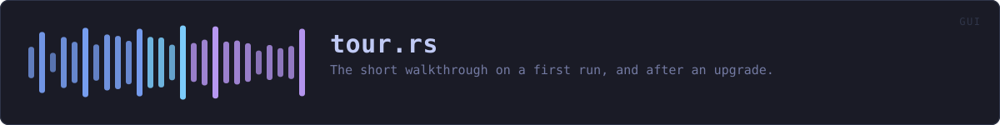

crates/veilvoice-gui/src/tour.rs
veilvoice-gui · 289 lines · read the source here · or on GitHub
The short tour on a first run, and after an upgrade.
What it is for
The window has nine tabs and nothing said what any of them were. Somebody opening this for the first time met a tab strip and had to guess, and two of the nine, Monitor and Lock, are not what their names suggest to a person who has not read the documentation.
So: one card per tab, one sentence each, skippable at any point, and gone for good once seen. It is not a walkthrough with arrows pointing at controls. It is the paragraph a person would have read in a manual, offered at the moment they would have wanted it, and it takes about twenty seconds.
Why it comes back after an upgrade
Only as far as the tabs that are new. A tour that replays in full on every upgrade is a tour people learn to skip, and one that never comes back means a tab added in a later release is never introduced to anybody who was already a user.
What is stored is the list of tabs that were toured, not a "seen" flag and not the version number. A flag cannot answer the question an upgrade asks, and the version can only answer it indirectly: comparing versions tells you that something changed, and the tab list tells you what, which is the thing being shown. It also means a release that adds no tab shows nobody anything, which is the common case and the right behaviour for it.
Portable or installed
The last card says which one this copy is, in those words, because it is the question behind "where did my settings go" and "why is it not in my menu". It is a statement rather than a prompt: Install is a tab, the decision is made there, and a tour is a bad place to ask somebody to commit to anything.
WHAT THIS FILE CONTAINS
289 lines defining 6 functions (6 public), 1 type and 1 constant. Everything below is read out of the source, so it cannot disagree with the code.
The types it owns.
struct Tourline 109 · Where the tour is up to.
What happens when it runs. These are the ways in: public, and nothing else in this file calls them, so they are what an outside caller reaches first.
all_keysline 117 · Every tab key the tour knows, for storing once it has run.Tour::startline 123 · Start the tour from the beginning, showing every card.Tour::start_new_onlyline 132 · Start it showing only the cards whose tabs are not in known.Tour::runningline 147 · Whether the tour is on screen.Tour::panelline 161 · Draw the current card.
reachesstop
WHAT CALLS WHAT
The functions this file defines, and the calls between them. An edge means the callee's name appears, called, inside the caller's body. This is a syntactic reading, not a type-resolved one.
The same graph as Mermaid source
%%{init: {"theme":"base","themeVariables":{"background":"#1a1b26","primaryColor":"#1f2335","primaryTextColor":"#c0caf5","primaryBorderColor":"#7aa2f7","secondaryColor":"#16161e","tertiaryColor":"#16161e","lineColor":"#737aa2","textColor":"#c0caf5","mainBkg":"#1f2335","nodeBorder":"#7aa2f7","clusterBkg":"#16161e","clusterBorder":"#2f3549","fontFamily":"ui-monospace, SFMono-Regular, Consolas, monospace","fontSize":"14px"}}}%%
flowchart TD
n_all_keys(["all_keys<br/>line 117"])
n_start(["Tour::start<br/>line 123"])
n_start_new_only(["Tour::start_new_only<br/>line 132"])
n_running(["Tour::running<br/>line 147"])
n_stop["Tour::stop<br/>line 152"]
n_panel(["Tour::panel<br/>line 161"])
n_panel --> n_stop
click n_all_keys href "https://github.com/tilas01/veilvoice/blob/main/crates/veilvoice-gui/src/tour.rs#L117" "open the source"
click n_start href "https://github.com/tilas01/veilvoice/blob/main/crates/veilvoice-gui/src/tour.rs#L123" "open the source"
click n_start_new_only href "https://github.com/tilas01/veilvoice/blob/main/crates/veilvoice-gui/src/tour.rs#L132" "open the source"
click n_running href "https://github.com/tilas01/veilvoice/blob/main/crates/veilvoice-gui/src/tour.rs#L147" "open the source"
click n_stop href "https://github.com/tilas01/veilvoice/blob/main/crates/veilvoice-gui/src/tour.rs#L152" "open the source"
click n_panel href "https://github.com/tilas01/veilvoice/blob/main/crates/veilvoice-gui/src/tour.rs#L161" "open the source"
classDef entry fill:#1f2335,stroke:#7aa2f7,color:#c0caf5
class n_all_keys,n_start,n_start_new_only,n_running,n_panel entry
classDef api fill:#1f2335,stroke:#7dcfff,color:#c0caf5
class n_stop apiThis site loads no third-party script, so it cannot run Mermaid; the diagram above is the same nodes and edges drawn by the generator instead. GitHub renders the source below directly.
ITEMS
| Item | Line | Documentation |
|---|---|---|
CARDS pub const | 46 | One card: the tab it is about, and what that tab is for. |
Tour pub struct | 109 | Where the tour is up to. |
all_keys pub fn | 117 | Every tab key the tour knows, for storing once it has run. |
Tour::start pub fn | 123 | Start the tour from the beginning, showing every card. |
Tour::start_new_only pub fn | 132 | Start it showing only the cards whose tabs are not in known. |
Tour::running pub fn | 147 | Whether the tour is on screen. |
Tour::stop pub fn | 152 | Stop it. |
Tour::panel pub fn | 161 | Draw the current card. |